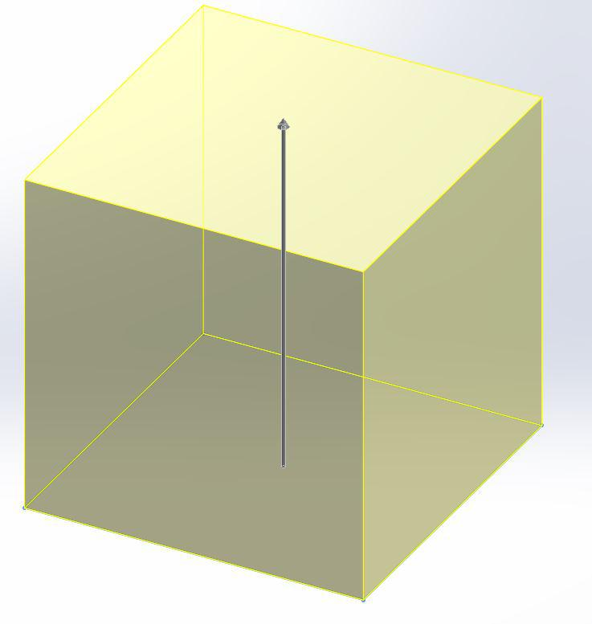
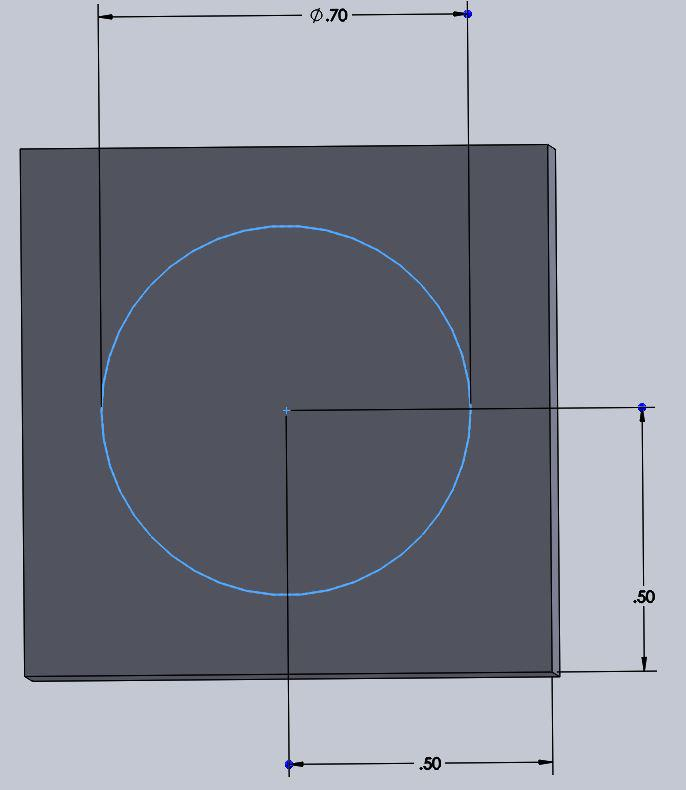

Sketching the Cube
To start constructing the cube first create a rectangle on the top plane.

Next we will need to extrude our box into a cube we use the extrude tool on the features tool bar to do this. Set your extrude depth to 1 inch.
Next we will create another sketch on one face of the cube to create the windows that allow you to see the sphere. Make a circle centered on the plane of diameter .7 inches as shown above.

We will use the cut extrude tool to cut this window. Select through all for the extrude cut, and repeat until you have a window on each face.

Click here for the next step.